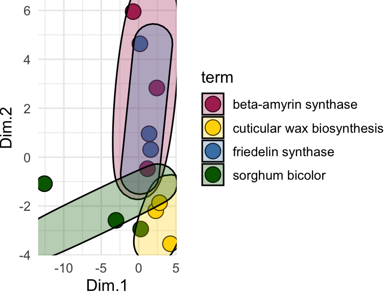
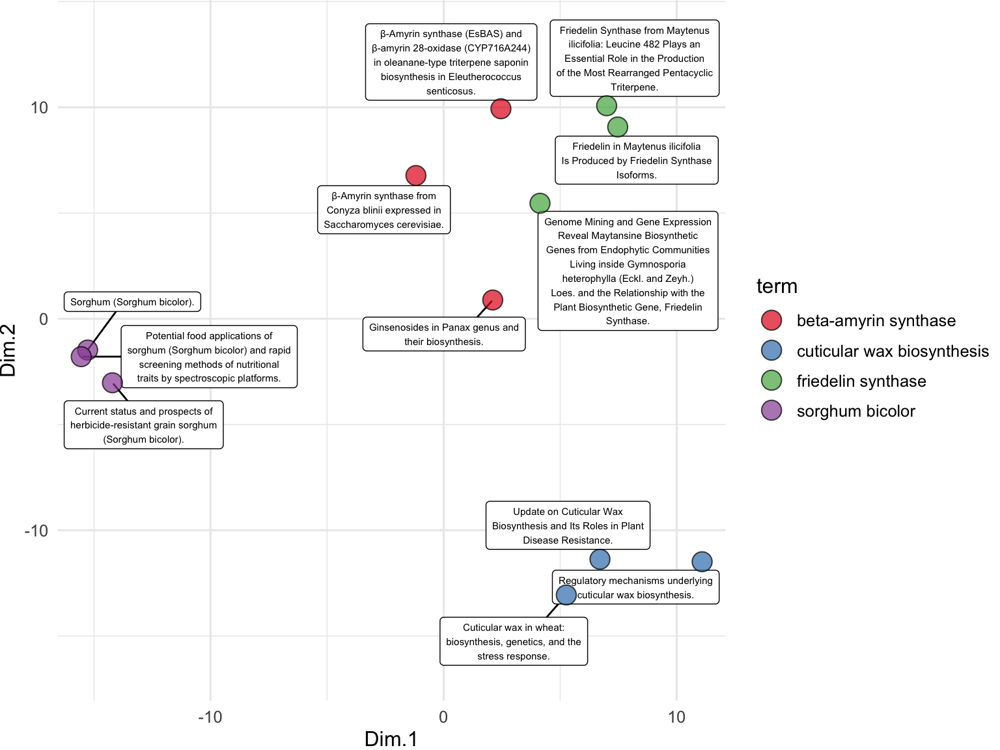
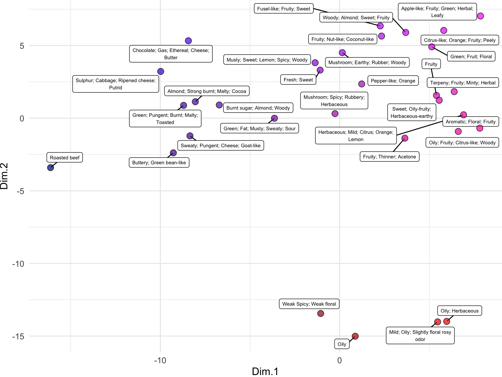

language models

To run the analyses in this chapter, you will need three things.
- Please ensure that your computer can run the following R script. It may prompt you to install additional R packages.
source("https://thebustalab.github.io/phylochemistry/modules/language_model_analysis.R")
## Loading language model module...
## Loading dgx module...
## Done with dgx loading!
## Done with language model loading!- Please create an account at and obtain an API key from https://pubmed.ncbi.nlm.nih.gov/ (Login > Account Settings > API Key Management), then store it as described just below.
- Please set up your class tokens for the course language model endpoints, following the setting up your class tokens section below.
Your PubMed API key and your class tokens are long sequences of numbers and letters, like passwords. Keep them handy, and keep them private.
In the last chapter, we looked at models that use numerical data to understand the relationships between different aspects of a data set (inferential model use) and models that make predictions based on numerical data (predictive model use). In this chapter, we will explore a set of models called language models that transform non-numerical data — such as written text — into the numerical domain, enabling that data to be analyzed using the techniques we have already covered. Language models are algorithms that are trained on large amounts of text and can perform a variety of tasks related to their training data. In particular, we will focus on embedding models, which convert language data into numerical data. An embedding is a numerical representation of data that captures its essential features in a lower-dimensional space or in a different domain. In the context of language models, embeddings transform text, such as words or sentences, into vectors of numbers, enabling machine learning models and other statistical methods to process and analyze the data more effectively.
A basic form of an embedding model is a neural network called an autoencoder. Autoencoders consist of two main parts: an encoder and a decoder. The encoder takes the input data and compresses it into a lower-dimensional representation, called an embedding. The decoder then reconstructs the original input from this embedding, and the output from the decoder is compared against the original input. The model (the encoder and the decoder) are then iteratively optimized with the objective of minimizing a loss function that measures the difference between the original input and its reconstruction, resulting in an embedding model that creates meaningful embeddings that capture the important aspects of the original input.
setting up your class tokens
The embedding and text generation models used in this chapter are served by the course’s own endpoints, so you do not need a Hugging Face account or any commercial API key of your own. What you do need is a token for each endpoint. Both tokens are posted on the course Canvas page. Treat them exactly like passwords: do not type them into your scripts, do not share them outside the class, and never commit them to GitHub. Your own PubMed key from step 2 above gets stored in the same place, and deserves the same care.
Rather than putting any of these in your code, you will store them in a file that R reads automatically when it starts up, called .Renviron, which lives in your home directory. Open it by running:
file.edit("~/.Renviron")That will open an editor (the file may well be empty, or may not exist yet — that is fine). Add the following five lines, replacing each paste_..._here with the matching value — the two class tokens from Canvas, and your own PubMed key — then save the file:
EMBED_SERVER_URL=https://embed.lbusta.org
EMBED_SERVER_TOKEN=paste_the_embedding_token_here
GENERATE_SERVER_URL=https://generate.lbusta.org
GENERATE_SERVER_TOKEN=paste_the_generation_token_here
PUBMED_TOKEN=paste_your_own_pubmed_key_hereNow restart R, because .Renviron is only read when R starts (in RStudio: Session > Restart R). Once R has restarted, check that it can see your settings:
Sys.getenv("EMBED_SERVER_URL")If that prints the address of the embedding endpoint, you are ready to go. If it prints an empty string "", then R is not seeing the file — make sure you saved .Renviron, that it is in your home directory, and that you restarted R afterwards.
With those variables set, embedText() and generateText() will send their requests to the course endpoints automatically, and searchPubMed() will pick up your key with Sys.getenv("PUBMED_TOKEN"). You will notice that no actual key or token appears anywhere in the code in this chapter, which is exactly the point: secrets belong in your environment, not in your analysis scripts.
pre-reading
Please read over the following:
- Text Embeddings: Comprehensive Guide. In her article, “Text Embeddings: Comprehensive Guide”, Mariya Mansurova explores the evolution, applications, and visualization of text embeddings. Beginning with early methods like Bag of Words and TF-IDF, she traces how embeddings have advanced to capture semantic meaning, highlighting significant milestones such as word2vec and transformer-based models like BERT and Sentence-BERT. Mansurova explains how these embeddings transform text into vectors that computers can analyze for tasks like clustering, classification, and anomaly detection. She provides practical examples using tools like OpenAI’s embedding models and dimensionality reduction techniques, making this article an in-depth resource for both theoretical and hands-on understanding of text embeddings.
text embeddings
Here, we will create text embeddings using publication data from PubMed. Text embeddings are numerical representations of text that preserve important information and allow us to apply mathematical and statistical analyses to textual data. Below, we use a series of functions to obtain titles and abstracts from PubMed, create embeddings for their titles, and analyze them using principal component analysis.
First, we use the searchPubMed function to extract relevant publications from PubMed based on specific search terms. This function interacts with the PubMed website via a tool called an API. An API, or Application Programming Interface, is a set of rules that allows different software programs to communicate with each other. In this case, the API allows our code to access data from the PubMed database directly, without needing to manually search through the website. An API key is a unique identifier that allows you to authenticate yourself when using an API. It acts like a password, giving you permission to access the API services. You can obtain one by signing up for an NCBI account at https://pubmed.ncbi.nlm.nih.gov/. Here, rather than typing the key into the code, we read it out of the environment with Sys.getenv("PUBMED_TOKEN") — the same .Renviron file you set up at the start of this chapter. Pass it to the searchPubMed function along with your search terms. Here I am using “beta-amyrin synthase,” “friedelin synthase,” “Sorghum bicolor,” and “cuticular wax biosynthesis.” I also specify that I want the results to be sorted according to relevance (as opposed to sorting by date) and I only want three results per term (the top three most relevant hits) to be returned:
search_results <- searchPubMed(
search_terms = c("beta-amyrin synthase", "friedelin synthase", "sorghum bicolor", "cuticular wax biosynthesis"),
pubmed_api_key = Sys.getenv("PUBMED_TOKEN"),
retmax_per_term = 3,
sort = "relevance"
)
colnames(search_results)
## [1] "entry_number" "term" "date"
## [4] "journal" "title" "doi"
## [7] "abstract"
select(search_results, term, title)
## # A tibble: 12 × 2
## term title
## <chr> <chr>
## 1 beta-amyrin synthase Ginsenosides in Panax genus a…
## 2 beta-amyrin synthase β-Amyrin synthase from Conyza…
## 3 beta-amyrin synthase β-Amyrin synthase (EsBAS) and…
## 4 friedelin synthase Friedelin in Maytenus ilicifo…
## 5 friedelin synthase Friedelin Synthase from Mayte…
## 6 friedelin synthase Genome Mining and Gene Expres…
## 7 sorghum bicolor Current status and prospects …
## 8 sorghum bicolor Sorghum (Sorghum bicolor).
## 9 sorghum bicolor Potential food applications o…
## 10 cuticular wax biosynthesis Cuticular wax in wheat: biosy…
## 11 cuticular wax biosynthesis Regulatory mechanisms underly…
## 12 cuticular wax biosynthesis Update on Cuticular Wax Biosy…From the output here, you can see that we’ve retrieved records for various publications, each containing information such as the title, journal, and search term used. This gives us a dataset that we can further analyze to gain insights into the relationships between different research topics.
GloVe embeddings
GloVe (Global Vectors) embeddings represent words as fixed numeric vectors based on how often words co-occur across a large text corpus. In practice, GloVe learns a vector for each word so that words that appear in similar contexts end up with similar vectors. This means each word has a single embedding that does not change across sentences.
At the word level, each token is replaced by its corresponding vector from the GloVe table. At the sentence level, these word vectors are combined into a single vector that represents the whole sentence. A simple approach is to average the word vectors across the sentence (other approaches include weighted averages or more complex pooling).
Below, we generate sentence-level GloVe embeddings for the PubMed titles retrieved in this chapter. This uses the same PubMed results as the analysis below, but switches the embedding method to GloVe by providing a local GloVe file path. Download a GloVe file from https://nlp.stanford.edu/projects/glove/ and update the path to the file on your machine.
search_results_glove <- embedText(
search_results,
column_name = "title",
path_to_glove_file = "/Users/bust0037/Documents/Websites/glove.6B.50d.txt"
)
##
|
| | 0%
|
|==== | 8%
|
|======== | 17%
|
|============ | 25%
|
|================= | 33%
|
|===================== | 42%
|
|========================= | 50%
|
|============================= | 58%
|
|================================= | 67%
|
|====================================== | 75%
|
|========================================== | 83%
|
|============================================== | 92%
|
|==================================================| 100%
runMatrixAnalysis(
data = search_results_glove,
analysis = "pca",
columns_w_values_for_single_analyte = colnames(search_results_glove)[grep("embed", colnames(search_results_glove))],
columns_w_sample_ID_info = c("title", "term")
) %>%
ggplot() +
geom_point(aes(x = Dim.1, y = Dim.2, fill = term), shape = 21, color = "black", size = 5) +
geom_mark_ellipse(aes(x = Dim.1, y = Dim.2, fill = term), color = "black") +
theme_minimal() +
scale_fill_manual(values = c("maroon", "gold", "steelblue", "darkgreen"))
transformer embeddings
Transformer embeddings start with a vector for each word, then update those vectors by looking at how each word relates to the other words in the sentence. In very simple terms, the model lets each word “pay attention” to the others and adjusts its vector based on that context. This creates contextual embeddings, where the same word can end up with different vectors depending on the sentence it appears in.
Below, we generate transformer-based embeddings using the course embedding endpoint. This example uses the existing PubMed results and embeds the titles with a pretrained transformer model.
Next, we use the embedText function to create embeddings for the titles of the extracted publications. Unlike PubMed, this does not need an API key of your own: the request is authenticated with the class token you put in your .Renviron above, and embedText() picks that up on its own.
To set up the embedText function, provide the dataset containing the text you want to embed (in this case, search_results, the output from the PubMed search above) and the column with the text (title). That is all it needs. The embeddings are generated using a pre-trained embedding language model called ‘BAAI/bge-small-en-v1.5’, which runs on the course server. This model is designed to create compact, informative numerical representations of text, making it suitable for a wide range of downstream tasks, such as clustering or similarity analysis. If you would like to know more about the model and its capabilities, you can read its documentation at https://huggingface.co/BAAI/bge-small-en-v1.5.
search_results_embedded <- embedText(
df = search_results,
column_name = "title"
)
##
|
| | 0%
|
|==================================================| 100%
search_results_embedded[1:3,1:10]
## # A tibble: 3 × 10
## entry_number term date journal title doi abstract
## <dbl> <chr> <date> <chr> <chr> <chr> <chr>
## 1 1 beta… 2024-04-03 Acta p… Gins… 10.1… Ginseno…
## 2 2 beta… 2019-11-20 FEBS o… β-Am… 10.1… Conyza …
## 3 3 beta… 2026-01-27 Phytoc… β-Am… 10.1… Siberia…
## # ℹ 3 more variables: embedding_1 <dbl>, embedding_2 <dbl>,
## # embedding_3 <dbl>The output of the embedText function is a data frame where the 384 appended columns represent the embedding variables. These embeddings capture the features of each publication title. These embeddings are like a bar codes:
search_results_embedded %>%
pivot_longer(
cols = grep("embed",colnames(search_results_embedded)),
names_to = "embedding_variable",
values_to = "value"
) %>%
ggplot() +
geom_tile(aes(x = embedding_variable, y = factor(entry_number), fill = value)) +
scale_y_discrete(name = "article") +
scale_fill_gradient(low = "white", high = "black") +
theme(
axis.text.x = element_blank(),
axis.ticks.x = element_blank()
)
To examine the relationships between the publication titles, we perform PCA on the text embeddings. We use the runMatrixAnalysis function, specifying PCA as the analysis type and indicating which columns contain the embedding values. We visualize the results using a scatter plot, with each point representing a publication title, colored by the search term it corresponds to. The grep function is used here to search for all column names in the search_results data frame that contain the word ‘embed’. This identifies and selects the columns that hold the embedding values, which will be used as the columns with values for single analytes for the PCA and enable the visualization below. While we’ve seen lots of PCA plots over the course of our explorations, note that this one is different in that it represents the relationships between the meaning of text passages (!) as opposed to relationships between samples for which we have made many measurements of numerical attributes.
runMatrixAnalysis(
data = search_results_embedded,
analysis = "pca",
columns_w_values_for_single_analyte = colnames(search_results_embedded)[grep("embed", colnames(search_results_embedded))],
columns_w_sample_ID_info = c("title", "journal", "term")
) %>%
ggplot() +
geom_label_repel(
aes(x = Dim.1, y = Dim.2, label = str_wrap(title, width = 35)),
size = 2, min.segment.length = 0.5, force = 50
) +
geom_point(aes(x = Dim.1, y = Dim.2, fill = term), shape = 21, size = 5, alpha = 0.7) +
scale_fill_brewer(palette = "Set1") +
scale_x_continuous(expand = c(0,1)) +
scale_y_continuous(expand = c(0,5)) +
theme_minimal()
We can also use embeddings to examine data that are not full sentences but rather just lists of terms, such as the descriptions of odors in the beer_components dataset:
n <- 31
odor <- data.frame(
sample = seq(1,n,1),
odor = dropNA(unique(beer_components$analyte_odor))[sample(1:96, n)]
)
out <- embedText(
odor, column_name = "odor"
)
##
|
| | 0%
|
|========================= | 50%
|
|==================================================| 100%
runMatrixAnalysis(
data = out,
analysis = "pca",
columns_w_values_for_single_analyte = colnames(out)[grep("embed", colnames(out))],
columns_w_sample_ID_info = c("sample", "odor")
) -> pca_out
pca_out$color <- rgb(
scales::rescale(pca_out$Dim.1, to = c(0, 1)),
0,
scales::rescale(pca_out$Dim.2, to = c(0, 1))
)
ggplot(pca_out) +
geom_label_repel(
aes(x = Dim.1, y = Dim.2, label = str_wrap(odor, width = 35)),
size = 2, min.segment.length = 0.5, force = 25
) +
geom_point(aes(x = Dim.1, y = Dim.2), fill = pca_out$color, shape = 21, size = 3, alpha = 0.7) +
theme_minimal()
generative models
Embedding models convert language into numbers so that we can measure similarity. An extension of that same process can be used to create a generative language model, which uses embedding under the hood to generate new text when given instructions. The generateText() function provided by the source() command sends text to the course generation endpoint and returns a new column of model responses alongside the input data. You supply a column with prompts (the prompt_column, which contains the text you want processed) and, optionally, a column with system messages that steer the model’s behavior (system_column, the instructions that you want the model to follow when processing your input text). Each row is sent as a chat conversation: the system message sets the role, the prompt becomes the user message, and the model returns a reply.
In the example below, we ask the model to summarize each abstract with three comma-separated tags. We first add a system message to each row that defines the model’s role. We then call generateText(), passing the abstract column as the prompt. As with embedText(), there is no key in the code — the class token from your .Renviron authenticates the request. Finally, we select the title and the generated tags to see the results.
Note that generation is much slower and much more expensive than embedding: each row is a separate request to a large model. Keep the number of rows small while you are experimenting.
search_results$system <- paste(
"You are a scientific literature classification expert.",
"Your job is to generate three comma-separated tags for abstracts that you are given."
)
search_results <- generateText(
df = search_results,
prompt_column = "abstract",
system_column = "system"
)
select(search_results, title, generation)
## # A tibble: 12 × 2
## title generation
## <chr> <chr>
## 1 Ginsenosides in Panax genus and their biosynt… "Natural …
## 2 β-Amyrin synthase from Conyza blinii expresse… "# Tags:\…
## 3 β-Amyrin synthase (EsBAS) and β-amyrin 28-oxi… "# Classi…
## 4 Friedelin in Maytenus ilicifolia Is Produced … "# Classi…
## 5 Friedelin Synthase from Maytenus ilicifolia: … "# Classi…
## 6 Genome Mining and Gene Expression Reveal Mayt… "# Classi…
## 7 Current status and prospects of herbicide-res… "Herbicid…
## 8 Sorghum (Sorghum bicolor). "# Tags\n…
## 9 Potential food applications of sorghum (Sorgh… "# Tags f…
## 10 Cuticular wax in wheat: biosynthesis, genetic… "# Classi…
## 11 Regulatory mechanisms underlying cuticular wa… "Plant cu…
## 12 Update on Cuticular Wax Biosynthesis and Its … "Plant cu…further reading
creating knowledge graphs with LLMs. This blog post explains how to create knowledge graphs from text using OpenAI functions combined with LangChain and Neo4j. It highlights how large language models (LLMs) have made information extraction more accessible, providing step-by-step instructions for setting up a pipeline to extract structured information and construct a graph from unstructured data.
creating RAG systems with LLMs. This article provides a technical overview of implementing complex Retrieval Augmented Generation (RAG) systems, focusing on key concepts like chunking, query augmentation, document hierarchies, and knowledge graphs. It highlights the challenges in data retrieval, multi-hop reasoning, and query planning, while also discussing opportunities to improve RAG infrastructure for more accurate and efficient information extraction.